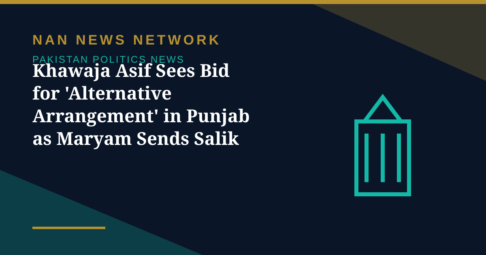

Khawaja Asif Sees Bid for 'Alternative Arrangement' in Punjab as Maryam Sends Salik Rs5 Billion Defamation Notice

Defence Minister Khawaja Asif has claimed that Minister for Overseas Pakistanis Chaudhry Salik Hussain's recent corruption allegations against the Punjab government are part of efforts to set the ground for an "alternative arrangement", Dawn reported on November 6.
What Asif said
Asif made the remarks during ARY News' programme 'Khabar — Mohammad Malick Ke Saath!' on Thursday, when he was asked about his earlier statement suggesting that Salik's allegations could be part of a future political agenda. He alleged that the allegations were "part of setting the stage for some post-period" and that there was "an attempt to create an alternative arrangement — to discredit incumbent people so that a fresh team can be presented". Asked whether the "alternative arrangement" was specific to Punjab or applied nationwide, Asif said: "No, no. Some people are positioning themselves behind it; it is not something that is happening across the country."
What Salik said
During a talk show on a private television channel on Monday, the Pakistan Muslim League-Quaid leader praised former Punjab chief minister and his uncle Chaudhry Pervez Elahi, and criticised the incumbent provincial administration headed by Chief Minister Maryam Nawaz, alleging that he regularly heard complaints of corruption. He also questioned lavish government spending, particularly the use of an official aircraft, arguing that public representatives should remain mindful of the country's economic difficulties. Salik, the younger son of PML-Q president Chaudhry Shujaat Hussain, belongs to a family whose political loyalties have diverged sharply since the ouster of Imran Khan's government in 2022 through a no-confidence vote.
The defamation notice
On Tuesday, Chief Minister Maryam said she had sent Salik a Rs5 billion defamation notice, demanding that he retract his remarks. Salik said he had received a legal notice from the chief minister and would file a reply soon. The row has put the spotlight on tensions within the ruling coalition's orbit in Punjab, and the legal exchange between the chief minister and a federal minister from an allied party is now the next step to watch.
Sources: Dawn, November 6, 2026
More on Pakistan Politics News
- ECP Sets February 7 for First Phase of Punjab Local Government Elections as KP Polls Stay Halted
- ECP Suspends All Preparations for Local Government Elections in Khyber Pakhtunkhwa
- Opposition Agrees to Hold All Parties Conference Within 10 Days After Fazl Meeting
- Pakistan Tests Indigenous Fa'az Air-to-Air Missile, Its First Locally Developed Weapon of Its Kind
- UN Committee Reviews Pakistan's Progress on Economic, Social and Cultural Rights Today
- Government Offers PTI Five Seats on Electoral Reforms Committee — and PTI Asks for the 2013 Formula
- ECP Issues Show-Cause Notice to MQM-P Over Missed Intra-Party Poll Deadline
- MQM-P Launches Street Movement for New Administrative Units, Announces November 29 Rally
- Pakistan Welcomes US Mediation Offer on Taliban Talks — With Conditions
- PTI Hits Back at Shehbaz Sharif Over KP Criticism, Demands End to Governor's Rule
- China's CPC Minister Liu Haixing Arrives in Islamabad on First Official Visit
- PPP Courts Opposition to Join 30-Member Electoral Reforms Committee
- National Assembly Unanimously Passes Workplace Harassment Resolution as Parliament Is Prorogued
- National Assembly Passes Four Government Amendment Bills by Majority Vote
- Opposition Signals Willingness to Join Electoral Reforms Committee After PPP Outreach
- National Assembly Session Suspended After Speaker Finds House Lacks Quorum
- Pakistan Proposes Parliamentary Friendship Group With Turkmenistan
- Lahore High Court Judge Mohsin Akhtar Kayani Resigns, Citing Executive Grip on Judiciary
- Pakistan Says Afghan Firing Kills One in South Waziristan Border District
- Pakistan Marks Kashmir Black Day With Rallies Across the Country
- National Assembly Passes Seven Private Members' Bills, Sends Six to Committees
- Pakistan Strongly Condemns Houthi Missile Attacks Near Makkah and Madinah
- Pakistan, Saudi Arabia and Turkiye Reported to Hold Tehran Talks on De-escalation
- Pakistan LPG Shortage Worsens as Iran Border Crossings Close
- Pakistan Ends Machine-Readable Passports and Switches Fully to E-Passports
- Pakistan Calls for a Fairer Global Order at the United Nations